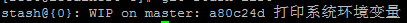
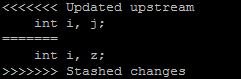

| 版本 | 日期 | 状态 | 修订人 | 摘要 |
|---|---|---|---|---|
| V1.1 | 2018-01-02 | 创建 | HunterFu | 初始版本 |
同事在使用git pull代码时，经常会碰到有冲突的情况，提示如下信息：
error: Your local changes to 'c/environ.c' would be overwritten by merge. Aborting.
Please, commit your changes or stash them before you can merge.
这个意思是说更新下来的内容和本地修改的内容有冲突，先提交你的改变或者先将本地修改暂时存储起来。
处理的方式非常简单，主要是使用git stash命令进行处理，分成以下几个步骤进行处理。
先将本地修改存储起来
$ git stash
这样本地的所有修改就都被暂时存储起来
用git stash list可以看到保存的信息：
git stash list
结果如下

其中 stash@{0} 就是刚才保存的标记。
同步仓库内容(pull)
暂存了本地修改之后，就可以pull了。
$ git pull
还原暂存的内容
$ git stash pop stash@{0}
系统提示如下类似的信息：
Auto-merging c/environ.c
CONFLICT (content): Merge conflict in c/environ.c
意思就是系统自动合并修改的内容，但是其中有冲突，需要解决其中的冲突。
解决文件中冲突的的部分
打开冲突的文件，会看到类似如下的内容：

其中:
Updated upstream 和 =====之间的内容就是pull下来的内容
==== 和 stashed changes 之间的内容就是本地修改的内容
碰到这种情况，git也不知道哪行内容是需要的，所以要自行确定需要的内容。
解决完成之后，就可以正常的提交了。
执行git rm --cached logs/xx.log命令即可
需要注意的，git rm –cached 删除的是追踪状态，而不是物理文件；如果你真的是彻底不想要了，你也可以直接 rm＋忽略＋提交
修正 .gitignore 文件 忽略不需要跟踪的文件或者目录